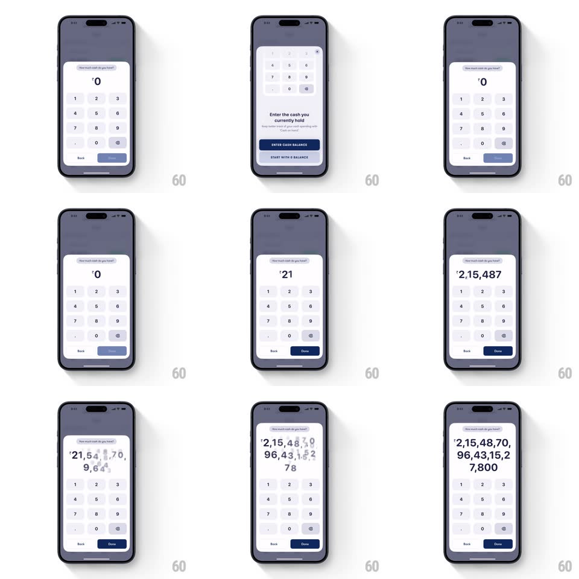

Media
Frame-by-frame

Rebuild this interaction 1:1: Fold's cash-balance entry - the "Enter the cash you currently hold" sheet morphs into a full keypad input where the amount grows digit by digit, the display text scaling down to fit as the number lengthens.

Rebuild this interaction 1:1: Fold's cash-balance entry - the "Enter the cash you currently hold" sheet morphs into a full keypad input where the amount grows digit by digit, the display text scaling down to fit as the number lengthens.
## Integration
Integration: stack-agnostic spec - springs given as stiffness/damping, timed motions as duration + curve; map every value to your framework and animation library of choice.
## Scene
A sheet ("Enter the cash you currently hold", ENTER CASH BALANCE button, "Start with 0 balance" link) becomes a calculator: "How much cash do you hold?" label, a large centered amount readout (₹0 initially), a numeric keypad, and Back / Done buttons.
## Motion spec
Pattern: sheet-to-calculator morph with dynamic amount scaling.
- Morph: the sheet's body crossfades into the calculator (250ms) while the sheet grows taller toward the keypad layout (spring ~340/26, 400ms); the CTA morphs into the Done button (width + label crossfade, 200ms).
- Typing: each key press appends a digit - the new digit pops in (scale 1.2 -> 1, 120ms) and the whole readout recenters.
- Dynamic scale: as the digit count crosses width thresholds, the readout's font size steps down (with a 150ms animated resize) so the number always fits; grouping separators appear as the number grows (₹21,548 -> ₹2,15,48,70,96,43,15,27,800).
- Done enables (fades from disabled to navy, 150ms) once a nonzero amount is entered.
## Calibration
- The keypad is fixed; only the readout scales - no layout jump in the keys.
- Font steps are animated, never a snap between sizes.
## Reduced motion
Digit pop and font steps happen without animation.
## Don't miss
- Indian digit grouping (lakh/crore commas) in the readout.
- The sheet-to-keypad transition is one continuous surface growing, not two sheets swapping.